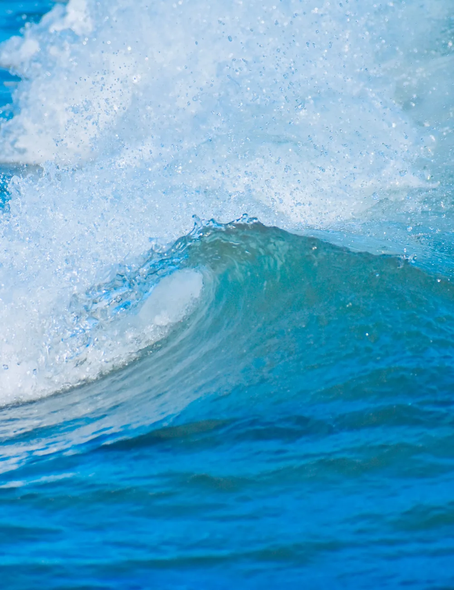

The idea
Much of safety is decided before departure

Running a yacht asks a lot of a few people. What they need to know is scattered across instruments, apps and logbooks. Each tool does one job well; nothing asks what it all means for this crew, today.
Marilosa brings it together, before departure, underway and after arrival, and leaves every decision with the captain.
people died in Swedish leisure boating in 2025, against an average of 17 a year over the last five years
sea rescue cases in Sweden in summer 2026, most of them motor and sailing boats
reasons for rescue: engine or propeller failure, grounding, and hard weather
Sources: Transportstyrelsen, 12 January 2026 (preliminary figures); Sjöfartsverket, 15 September 2026 (June–August). Engine, depth and weather are all things a good preparation looks at.